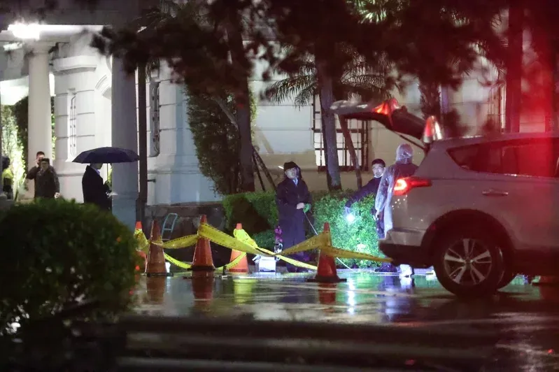

近期，台当局审计部门公布了台军自残、自杀数据，以及台海军舰船失修情况。且不论台军中还有多少其他恶劣事件没有被公之于众，仅从这份颇为节制的所谓“官方报告”中，已可见台湾地区武装的残破境况。

今年3月，蔡英文办公室一名卫兵在门口处举枪自杀，警方赶至拉起封锁线。 图自自台湾《联合报》
在人员自伤方面，台审计部门披露，台军近5年自伤人数合计158人，其中自伤致死97人，“轻生”成为台军意外事故死因首位。今年1月至5月，自伤致死人数已高达13人，超过车祸致死人数。为降低台军自伤发生率，台防务部门2012年成立了所谓“自杀防治中心”，并于2016年将“零自伤”设为目标，但军中自伤案件不仅没有减少，反而持续升高，连民进党民代都批评台防务部门的自杀防处机制“只剩下口号”。
在装备方面，台审计部门报告指出，台海军舰艇屡因兵力运用等因素而调整修期，导致未依维修周期执行修护，使得主电机等重要装备大修时数届限、航修工程增加等，影响装备稳定性及兵力派遣运用。台海军前舰长吕礼诗分析，台海军目前主力作战舰艇约26艘，若按照过往“三分之一战备，三分之一训练，三分之一维修”的分配，实际上可用舰艇并不多。
除舰船外，台陆军装备也出现重大瑕疵。有媒体爆料台军自主生产制造的“云豹”八轮装甲车抗弹钢板出现裂纹，其中27辆是两年内制造的机炮装步战斗车，另23辆是超过保修期限的装步战斗车与装步指挥车，这让台军士兵担心所谓“重要武器之一”的“云豹”恐将变成“战场铁棺材”。
台当局此时发布相关报告，一方面暴露了台军当前人困马乏、人仰马翻的真实状态，另一方面也有意替下一步按照美方意图增加防务预算做铺垫，毕竟上到装备维修，下到辅导人员心理，都是需要花钱的事。
“战争没有赢家，和平没有输家”，前不久，台湾地区前领导人马英九在出席活动时提醒台当局，高昂军费对台湾来说是沉重负担，尤其若军购变成特朗普口中缴“保护费”的荒谬、轻蔑说法，防务预算就等于是“钱坑法案”，会拖垮台湾的财政。他指出，两岸关系倒退，关键在于民进党当局拒绝两岸共同的政治基础“九二共识”，又找不到大陆能够接受的新基础，导致两岸面临没有互信，又没有正式沟通管道的危险境界。
“棋子”终归是“棋子”，赖当局再怎么奴颜婢膝向外部势力献媚求援，增加“保护费”，也改变不了被利用、被剥皮、被丢弃的悲惨下场。事实将证明，“以武谋独”是水中捞月，“倚外谋独”是大梦一场。若不悬崖勒马，“棋子”终将成“弃子”。